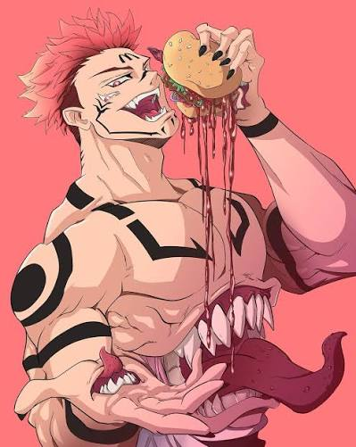

Protagonista
Yuji Itadori
Tras tragar un dedo maldito para salvar a sus compañeros, se convierte en el recipiente de Sukuna, el Rey de las Maldiciones.
Registro de Hechiceros y Maldiciones • Escuela Técnica de Tokio





Tras tragar un dedo maldito para salvar a sus compañeros, se convierte en el recipiente de Sukuna, el Rey de las Maldiciones.
Estudiante de primer año controlado y calmado. Utiliza la Técnica de Diez Sombras para invocar diversos Shikigamis y combatir amenazas desde la estrategia.
Una joven con una fuerte convicción que pelea usando un martillo, clavos y muñecos vudú, canalizando energía maldita de manera letal a largas distancias.
Un espíritu maligno implacable de hace mil años. Coexiste dentro del cuerpo de Yuji, esperando el momento exacto para desatar el caos absoluto.
Pese a no tener energía maldita innata ni poder ver maldiciones sin sus lentes, posee habilidades físicas sobrehumanas que superan a la mayoría de los hechiceros comunes.
Exoficinista metódico y reservado que regresó al mundo de la hechicería. Su técnica le permite crear un punto débil en su oponente basándose en una proporción de 7:3.
Profesor de la academia y el pilar del mundo de la hechicería. Domina la técnica del Ilimitado y posee los "Seis Ojos", lo que lo vuelve prácticamente intocable en batalla.